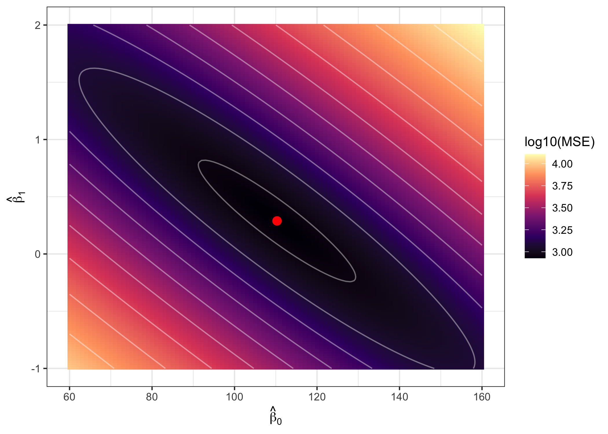

The last exercise scored lines that were handed to you. This one turns that round: the loss becomes a function of the intercept and the slope, and fitting becomes a search for the pair that scores lowest. You will score candidate lines by hand, then score fifteen thousand of them at once and look at the surface they trace out — which is the thing every fitting procedure is trying to find the bottom of.
Download the R code from this chapter — every cell below, in page order, with the blanks left for you to fill in. Open it in Positron beside the page and run it a chunk at a time.
Where we left off
Exercise 3.2 scored lines that somebody else had drawn. Load the same 80 patients, fit the line lm() chooses, and rebuild the contaminated copy — the one with patients 1, 3 and 5 tripled — because the last task needs both.
In Exercise 3.2 a loss scored a line someone else supplied. Now treat it as a function of the two parameters, which is what fitting actually optimises:
Nothing in that formula is new. The residual, the square and the mean are the three steps of the last exercise; what has changed is which part you hold fixed. The data is now the fixed thing and the parameters are what vary.
Start by hand with the first three patients, aged 28, 44 and 26, with glucose 194, 129 and 132. For \(\hat\beta_0 = 3\) and \(\hat\beta_1 = 5\) the predictions are 143, 223 and 133, so
Task 1 — Score two candidate lines on all 80 patients
Those two parameter values were picked out of the air. Score them on the whole dataset, then score a second pair, \(\hat\beta_0 = 4\) and \(\hat\beta_1 = 7\).
# Replace every ______ below, then run this cell.glu |>mutate(r_3_5 = glucose - (3+5* age),r_4_7 = glucose - (______)) |>summarise(at_3_5 =mean(r_3_5^2),at_4_7 =mean(r_4_7^2)) |>round(1)
On all 80 rows those two candidates score 7,462 and 22,991 against the fitted line’s 847.5. Both are terrible, and the first is better than the second, which is all a loss is for: ranking candidates.
WarningWhich number is the intercept
Writing \(\hat\beta_0 = 3\), \(\hat\beta_1 = 5\) and then drawing geom_abline(slope = 3, intercept = 5) plots a different line from the one you scored, and the plot will look convincing. geom_abline() takes slope and intercept by name for exactly this reason. Name both arguments, every time.
Step 2 — Every candidate line at once
Ranking two candidates is a loss doing its job. Fitting is the same idea with far more candidates. Build a grid of them — 101 intercepts between 60 and 160, 151 slopes between −1 and 2, 15,251 lines in total — pair every candidate with every patient, and score each candidate under both losses.
One row per candidate line, with its score under each loss. Draw the MSE column as a surface, with the line lm() returned marked in red.
ggplot(scores, aes(x = b0, y = b1)) +geom_raster(aes(fill =log10(MSE))) +geom_contour(aes(z =log10(MSE)), colour ="white",alpha =0.4, bins =12) +annotate("point", x =coef(fit_ols)[[1]], y =coef(fit_ols)[[2]],colour ="red", size =3) +scale_fill_viridis_c(option ="magma") +labs(x =expression(hat(beta)[0]), y =expression(hat(beta)[1]),fill ="log10(MSE)")

That picture is the loss function itself, with one colour for every line you could have drawn. Two features of it matter for the next exercise. The surface is a bowl: it has one lowest point and no others, which is why least squares has a single answer. And the bowl is a long diagonal trough rather than a round basin, because the intercept and the slope trade off against each other — raise the slope and you can compensate by lowering the intercept. Exercise 3.4 walks downhill on this exact surface, and the shape of the trough is what makes that harder than it sounds.
Task 2 — Find the best candidate under each loss
Pull the lowest-scoring row out of the grid, first by MSE and then by MAE.
# Replace every ______ below, then run this cell.scores |>slice_min(______, n =1)scores |>slice_min(MAE, n =1)coef(fit_ols) # the fitted line, to compare
The best candidate under MSE is intercept 110, slope 0.30, scoring 847.55 — against lm()’s 110.298, 0.2887 and 847.52. The difference is the spacing of the grid and nothing else. Under MAE the best candidate is a different line: intercept 99, slope 0.50.
Now do the same on the contaminated data, and watch which of the two losses changes its mind.
Squared error reverses the sign of the slope. Absolute error, given the same three corrupted patients, still says glucose rises with age. Same data, same grid of candidates, same arithmetic — only the loss is different.
NoteWhy not just use the grid
Fifteen thousand evaluations to recover two numbers already feels wasteful, and it is: the grid also has to be centred near the answer to find it, which requires knowing the answer. With ten parameters rather than two, a grid of this resolution would need more evaluations than there are atoms in the room. Grid search is a teaching device here, not a method.
Download the Python code from this chapter — every cell below, in page order, with the blanks left for you to fill in. Open it in Positron beside the page and run it a cell at a time.
Where we left off
Exercise 3.2 scored lines that somebody else had drawn. Load the same 80 patients, fit the line lm() chooses, and rebuild the contaminated copy — the one with patients 1, 3 and 5 tripled — because the last task needs both.
import pandas as pdimport numpy as npimport matplotlib.pyplot as pltfrom sklearn.linear_model import LinearRegressionglu = pd.read_csv("data/glucose_study.csv")fit_ols = LinearRegression().fit(glu[["age"]], glu["glucose"])glu_bad = glu.copy()glu_bad.loc[[0, 2, 4], "glucose"] *=3fit_ols.intercept_, fit_ols.coef_[0]
In Exercise 3.2 a loss scored a line someone else supplied. Now treat it as a function of the two parameters, which is what fitting actually optimises:
Nothing in that formula is new. The residual, the square and the mean are the three steps of the last exercise; what has changed is which part you hold fixed. The data is now the fixed thing and the parameters are what vary.
Start by hand with the first three patients, aged 28, 44 and 26, with glucose 194, 129 and 132. For \(\hat\beta_0 = 3\) and \(\hat\beta_1 = 5\) the predictions are 143, 223 and 133, so
Task 1 — Score two candidate lines on all 80 patients
Those two parameter values were picked out of the air. Score them on the whole dataset, then score a second pair, \(\hat\beta_0 = 4\) and \(\hat\beta_1 = 7\).
# Replace every ______ below, then run this cell.r_3_5 = glu["glucose"] - (3+5* glu["age"])r_4_7 = glu["glucose"] - (______)pd.Series({"at_3_5": (r_3_5 **2).mean(),"at_4_7": (r_4_7 **2).mean()}).round(1)
On all 80 rows those two candidates score 7,462 and 22,991 against the fitted line’s 847.5. Both are terrible, and the first is better than the second, which is all a loss is for: ranking candidates.
Step 2 — Every candidate line at once
Ranking two candidates is a loss doing its job. Fitting is the same idea with far more candidates. Build a grid of them — 101 intercepts between 60 and 160, 151 slopes between −1 and 2, 15,251 lines in total — pair every candidate with every patient, and score each candidate under both losses.
That picture is the loss function itself, with one colour for every line you could have drawn. Two features of it matter for the next exercise. The surface is a bowl: it has one lowest point and no others, which is why least squares has a single answer. And the bowl is a long diagonal trough rather than a round basin, because the intercept and the slope trade off against each other — raise the slope and you can compensate by lowering the intercept. Exercise 3.4 walks downhill on this exact surface, and the shape of the trough is what makes that harder than it sounds.
Task 2 — Find the best candidate under each loss
Pull the lowest-scoring row out of the grid, first by MSE and then by MAE.
# Replace every ______ below, then run this cell.print(scores.nsmallest(1, ______))print(scores.nsmallest(1, "MAE"))print(fit_ols.intercept_, fit_ols.coef_[0]) # the fitted line, to compare
The best candidate under MSE is intercept 110, slope 0.30, scoring 847.55 — against lm()’s 110.298, 0.2887 and 847.52. The difference is the spacing of the grid and nothing else. Under MAE the best candidate is a different line: intercept 99, slope 0.50.
Now do the same on the contaminated data, and watch which of the two losses changes its mind.
Read “lm()” above as LinearRegression: the comparison is the same.
Squared error reverses the sign of the slope. Absolute error, given the same three corrupted patients, still says glucose rises with age. Same data, same grid of candidates, same arithmetic — only the loss is different.
NoteWhy not just use the grid
Fifteen thousand evaluations to recover two numbers already feels wasteful, and it is: the grid also has to be centred near the answer to find it, which requires knowing the answer. With ten parameters rather than two, a grid of this resolution would need more evaluations than there are atoms in the room. Grid search is a teaching device here, not a method.
Reflection
The grid’s best candidate under squared error is an intercept of 110 and a slope of 0.30; lm() returns 110.298 and 0.2887. Is the grid wrong?
You double the resolution of the grid in both parameters. How many candidate lines is that, and how many would the same resolution cost for a model with ten parameters rather than two?
Stretch
NoteStretch 1 — Narrow the grid
Take the best candidate you found, build a second grid of 101 intercepts and 151 slopes centred on it but ten times finer, and score that. Compare the answer with lm()’s to three decimal places. Then say how many rounds of this you would need to match lm() exactly, and what that tells you about the method.
NoteStretch 2 — A loss that is neither
Huber loss is squared for residuals smaller than some cut-off and absolute for the larger ones. Add a third score to the grid for a cut-off you choose, find its best candidate on the contaminated data, and then find the cut-off at which the best slope flips back to positive. That number is the amount of contamination you have implicitly assumed.
What you can and cannot now claim
Can: that you can write a loss as a function of a model’s parameters, score any candidate pair against the data, and show that fitting is the search for the lowest point of the surface those scores trace out.
Cannot: that you can find that lowest point for any model worth fitting. A grid of 15,251 candidates recovered two parameters to the spacing of the grid, and it only worked because the grid was drawn around the answer. Exercise 3.4 replaces the grid with a method that uses the slope of the loss itself.